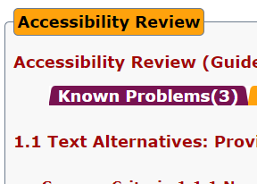
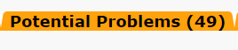

Accessibility
For the initial automatic test for WCAG (Web Content Accessibility Guidelines) we used a website called
AChecker which is a site
that checks html documents for accessibility issues
using WCAG 2.0.
We avoided having any known problems according to the website to make the accessibility more
comfortable.

We also checked the
Potential problems tab within the website

This was to make sure there was not something we had missed. We made sure out Alt texts for images
specified
that this text is replacing an image as to not cause confusion and were careful to use
<strong> for points instead of <b>
as <b> or bold is decorative
and does not affect the way accessibility software interacts with the content.
Some other accessibility choices we made include picking contrasting colors for background and the content that is supposed to be shown to the user. This makes it more comfortable to read and does not interfere with the experience. We also avoided using css to include images of importance since most accessiblity software does not interact with css code as it does with the html code. Paragraphs and the formatting of the content was also deemed important by the group as to not overflow one segment with information about various topics that would be more understandable split up.
This includes making sure we use the correct heading numbers (<h1> , <h2> )as to make sure it does not interact negetively with accessibility software.
We also took different screen sizes and devices into account and formatted a version of the website for both smaller screens for mobile devices and bigger screens such as laptops and monitors. This makes it an overall smoother experience to access the website from any device.
The file size of images was also taken into account as to not make the toll that loading the images take on the device and network higher than is needed. This could be especially important for users with slower network speeds or users with limited mobile network capacity.
We also made it so the images take up certain amount of space on the page so even if they do not load in as the text loads in they will not displace the text if they do load in after the initial first interaction to the page.
We also wanted the website to be easy to use so we added links to go back home to index or to the other pages from any page that you are currently at. This makes using the website a smoother experience for the user. These links are also accessible by highlighting them through pressing tab for more accessibility.
Back to top